/* aydin-buyuktas - proofs */
11 plates. Deterministic overlays rendered by the composition-analysis skill.
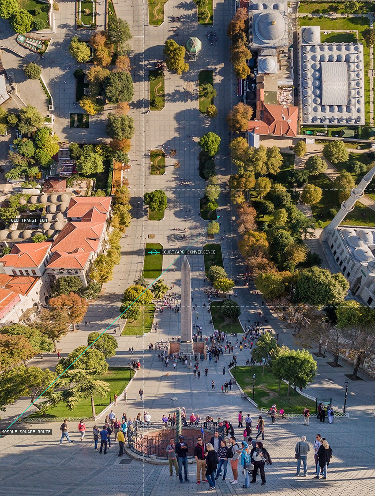
01-sultanahmet
Mosque precinct, fold transition, and courtyard convergence.
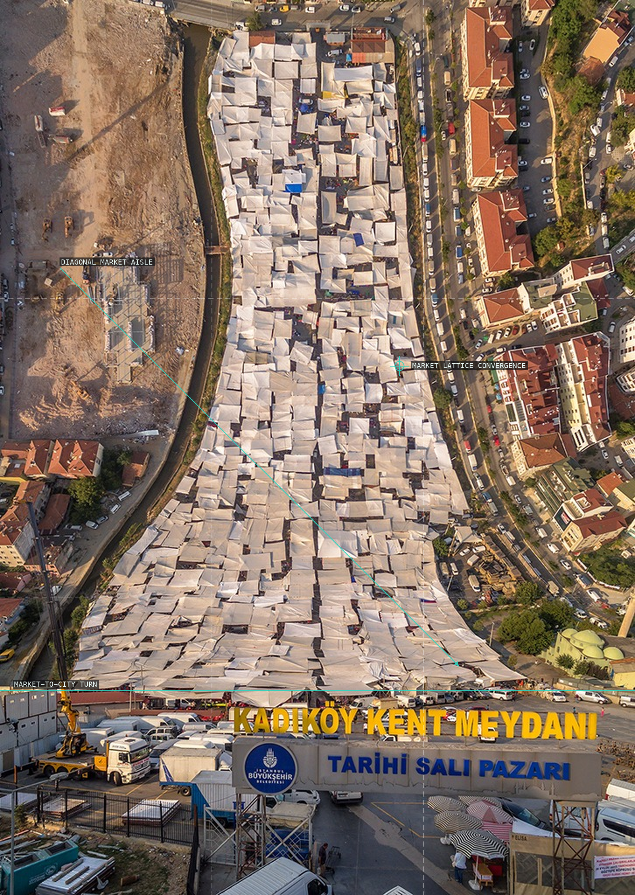
02-sali-pazari
Market lattice and its diagonal aisle.
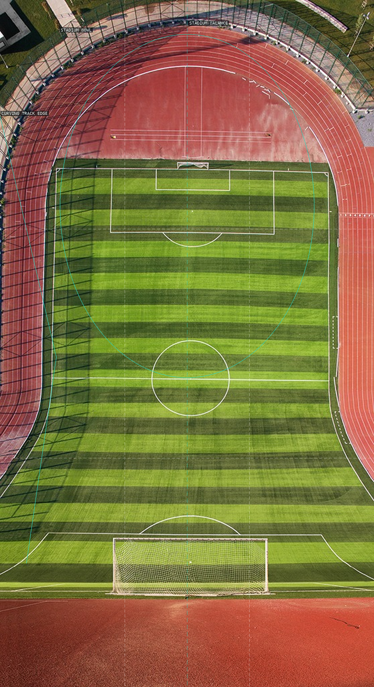
03-maltepe-stadi
Stadium bowl and curving track edge form a legible aerial field.
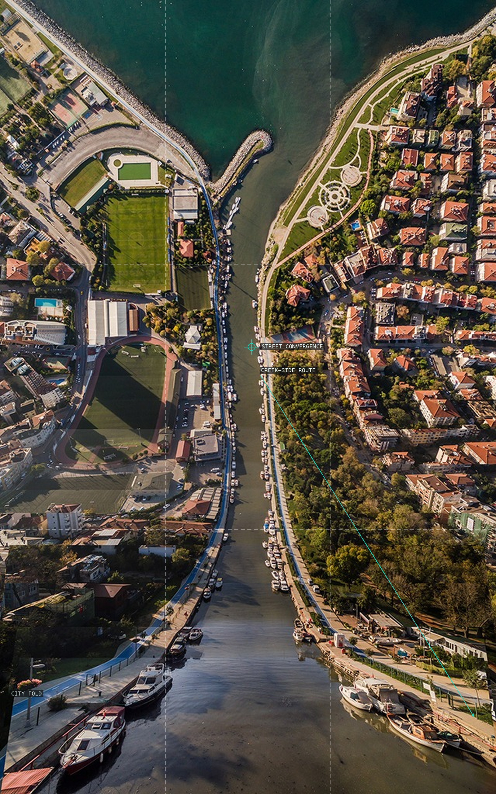
04-kurbagli-dere
Creek-side route across a dark urban field.
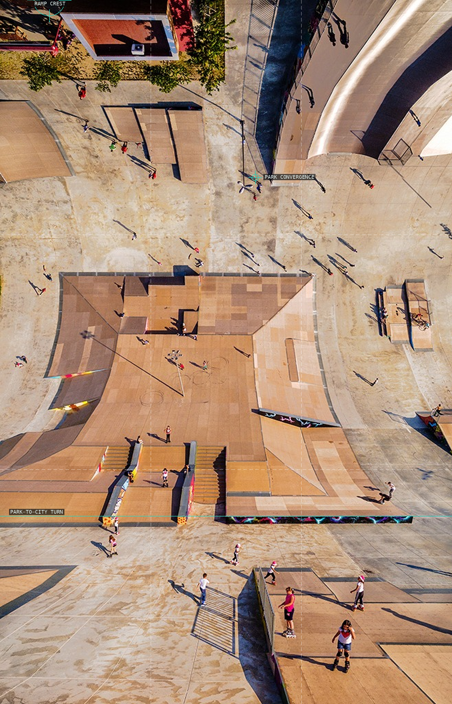
05-kaykaypist
Skate ramps rhyme with the larger fold.
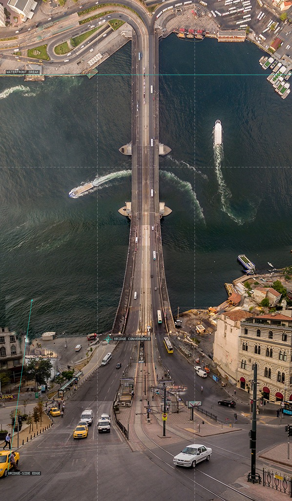
06-galata-bridge
Bridge route joins water, shore, and city.
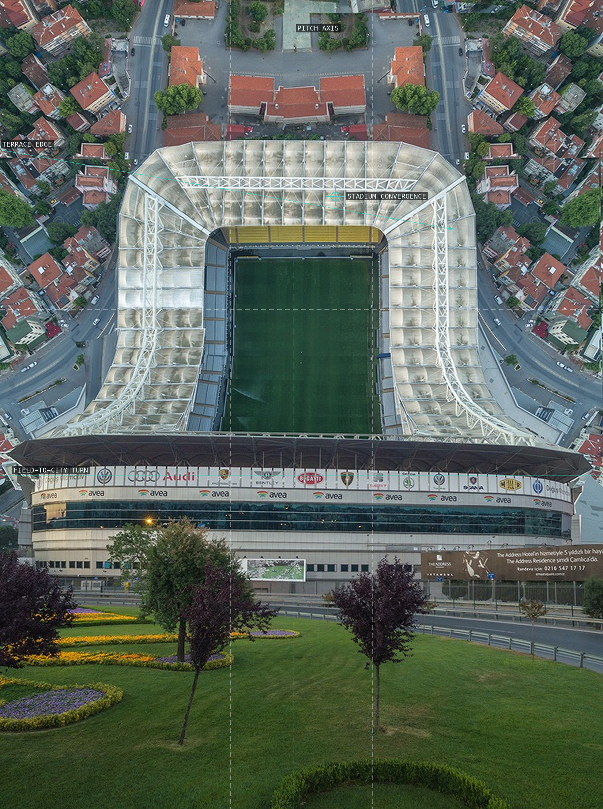
07-fenerbahce-stadium
Centered pitch counters the lifted city.
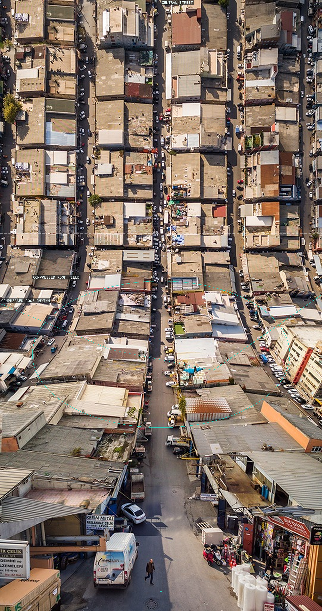
08-demirciler
Roof texture makes the turn feel continuous.
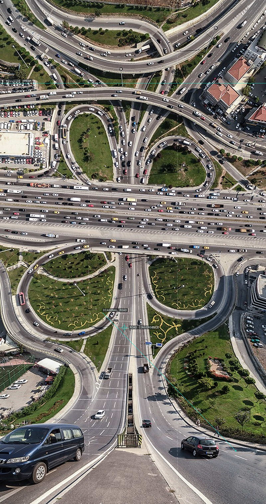
09-basibuyuk
Diagonal road preserves a map-like route.
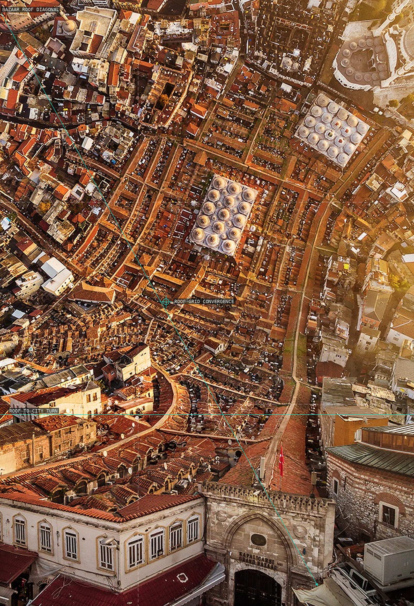
10-grand-bazaar
Roof grid opens into an urban field.
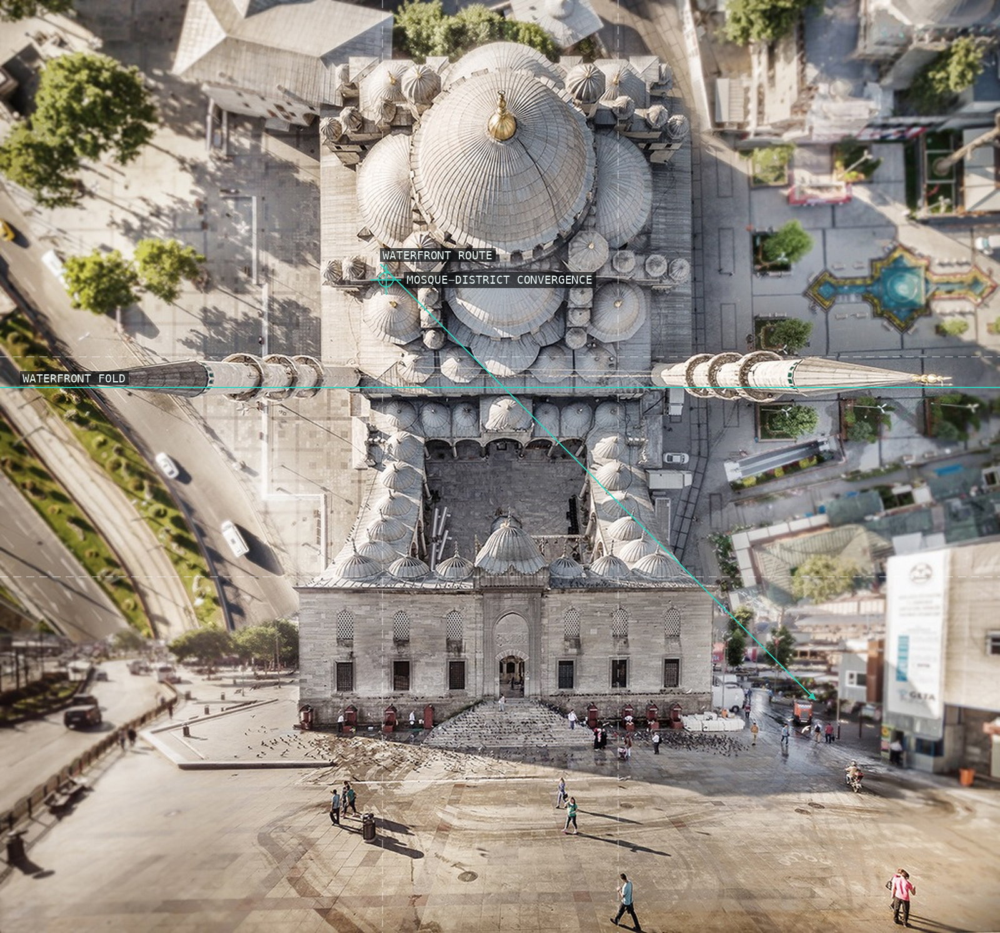
11-yeni-cami
Mosque, waterfront, and folded district.